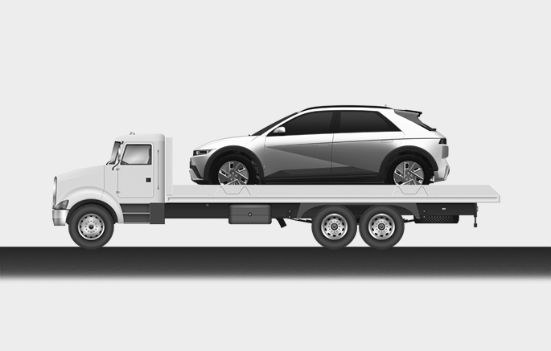
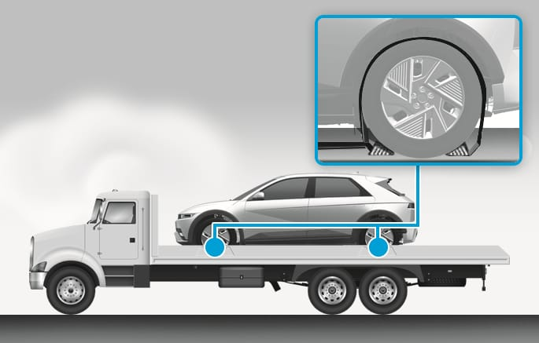

견인 트럭으로 상차 견인

2C_TowingGood_1
차량 전체를 견인 트럭에 싣는 방식으로, 차량의 손상을 피할 수 있는 가장 좋은 견인 방식입니다.
-
상차 견인 시 연결 고리를 차체 또는 샤시에 연 결하지 마십시오. 차량이 손상될 수 있습니다.
-
상차 견인 시 소프트 벨트로 타이어를 감싸서 차량을 견인 차량에 확실하게 고정하십시오.

2C_TowingGood_3